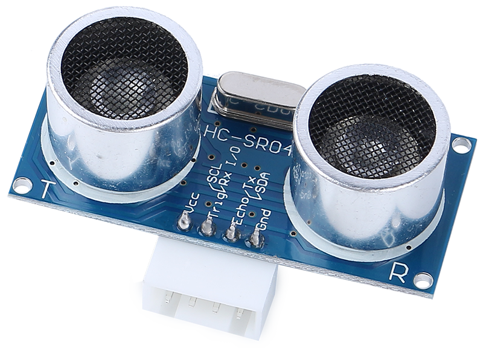

Note
Hello, welcome to the SunFounder Raspberry Pi & Arduino & ESP32 Enthusiasts Community on Facebook! Dive deeper into Raspberry Pi, Arduino, and ESP32 with fellow enthusiasts.
Why Join?
Expert Support: Solve post-sale issues and technical challenges with help from our community and team.
Learn & Share: Exchange tips and tutorials to enhance your skills.
Exclusive Previews: Get early access to new product announcements and sneak peeks.
Special Discounts: Enjoy exclusive discounts on our newest products.
Festive Promotions and Giveaways: Take part in giveaways and holiday promotions.
👉 Ready to explore and create with us? Click [here] and join today!
Ultrasonic Module
{kind=link}

TRIG: Trigger Pulse Input
ECHO: Echo Pulse Output
GND: Ground
VCC: 5V Supply
This is the HC-SR04 ultrasonic distance sensor, providing non-contact measurement from 2 cm to 400 cm with a range accuracy of up to 3 mm. Included on the module is an ultrasonic transmitter, a receiver and a control circuit.
You only need to connect 4 pins: VCC (power), Trig (trigger), Echo (receive) and GND (ground) to make it easy to use for your measurement projects.
Features
Working Voltage: DC5V
Working Current: 16mA
Working Frequency: 40Hz
Max Range: 500cm
Min Range: 2cm
Trigger Input Signal: 10uS TTL pulse
Echo Output Signal: Input TTL lever signal and the range in proportion
Connector: XH2.54-4P
Dimension: 46x20.5x15 mm
Principle
The basic principles are as follows:
Using IO trigger for at least 10us high level signal.
The module sends an 8 cycle burst of ultrasound at 40 kHz and detects whether a pulse signal is received.
Echo will output a high level if a signal is returned; the duration of the high level is the time from emission to return.
Distance = (high level time x velocity of sound (340M/S)) / 2

Application Notes
This module should not be connected under power up, if necessary, let the module’s GND be connected first. Otherwise, it will affect the work of the module.
The area of the object to be measured should be at least 0.5 square meters and as flat as possible. Otherwise, it will affect results.